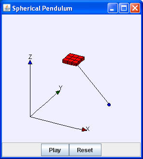
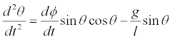
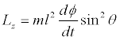

Spherical Pendulum models a particle under the influence of gravity that is constrained to stay on a spherical surface. The simplest example is that of a pendulum that is free to swing in any direction. This problem is most conveniently solved using spherical coordinates (r, θ, φ) where r is the radius, θ is the angle the pendulum makes with respect to the vertical z-axis, and φ is the rotation angle about the z-axis. These polar coordinates are converted into Cartesian (x, y, z) coordinates after every time step to position the pendulum bob in a three-dimensional Ejs world view.
Differential equations for (θ, φ) are easily derived using Lagrangian mechanics. The Langranian equation for θ yields:
.
Because the angular momentum about the z-axis Lz is conserved, we need only solve the θ equation. The φ rate of change for any value of θ is computed by solving for dφ/dt using the (fixed) value of Lz. that is computed from the initial conditions:
.
The Spherical Pendulum model is designed to teach Ejs modeling. Right click within the simulation to examine this model in the Ejs modeling and authoring tool. See:
The Easy Java Simulations (EJS) documentation can be downloaded from the ComPADRE Open Source Physics collection and from the Ejs website.
This simulation was created by Wolfgang Christian and Francisco Esquembre using the Easy Java Simulations (Ejs) modeling tool. You can examine and modify this simulation if you have Ejs installed by right-clicking within a plot and selecting "Open Ejs Model" from the pop-up menu. Information about Ejs is available at: <http://www.um.es/fem/Ejs/>.